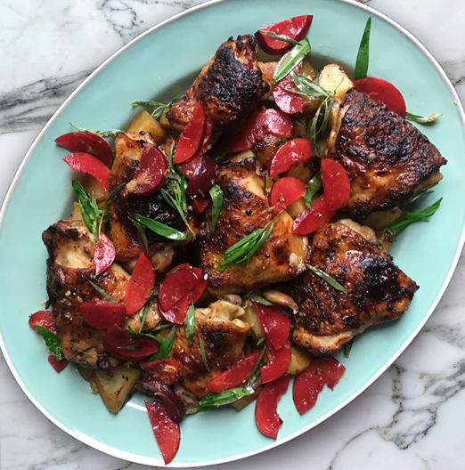

Chipotle-Roasted Chicken with Plum and Tarragon Salad

For this rich summer roast, make sure your plums are ripe and sweet, but still firm, to balance the heat and acidity in the chicken. There’s very little work involved, but the chicken will definitely benefit from marinating overnight.
Add the chicken to a large bowl with the garlic, CHILLI, three tablespoons of oil, the lemon zest, a teaspoon of salt and plenty of pepper. Mix to combine, cover and marinate in the fridge for at least an hour – preferably overnight.
Heat the oven to 200C/390F/gas 6. Add the Worcestershire sauce to the bowl with the chicken, mix well, and then transfer to a 30cm x 20cm high-sided baking tray, skin side up. Roast for 15 minutes, baste, increase the temperature to 230C/450F/gas 8, and roast for another 20 minutes or so, until cooked through. Baste again halfway through so the chicken is crisp and a deep golden-brown.
Make the salad as close as you can to serving. Finely chop the strips of lemon peel and add to a bowl with the plums, tarragon, vinegar, the remaining teaspoon of oil, a pinch of salt and a good grind of pepper. Toss everything together and serve alongside the chicken.